Gigpro → Qwick
Scaling design through growth & acquisition
Building a shared design foundation for product, brand, and scale.

Overview
When I joined Gigpro in 2022, product and marketing lacked a shared design language. As the company grew, customer-facing experiences became increasingly fragmented, making it harder for teams to deliver consistently and for the brand to stand out in a competitive market.
Two prior rebrands had left product and marketing surfaces misaligned, while teams worked without shared components, guidelines, or a clear visual point of view. Gigpro's 2025 acquisition of Qwick introduced an additional challenge: integrating two distinct brands, platforms, and customers into one cohesive experience while maintaining delivery momentum.
Response
Built a shared brand and design foundation across product and marketing
Operationalized the system through reusable tools, templates, and guidance
Evolved the system through growth, a brand evolution, and the move to the Qwick brand
What It Enabled
A shared design foundation that allowed product and marketing teams to deliver, evolve, and integrate customer-facing experiences more consistently at scale.
The following sections show how that system came together: the brand audit, the design direction it shaped, how it was operationalized across teams, and how it held up through the Qwick acquisition.
Brand Audit
Uncovering the problem
In my first two weeks at Gigpro, I spoke with people across the organization to understand how they felt about the brand, then reviewed how it appeared in product, marketing, internal materials, and past rebrands.
Fifteen conversations across six teams showed that the challenge went beyond the identity itself. Teams were working from different references, legacy styles were still in use, and there was no shared system for making everyday brand decisions. As the company entered a new phase of leadership, it also needed a clearer shared view of what Gigpro stood for.
The two identity directions below were created before I joined Gigpro. I used them to trace what had changed over time, what remained in use, and where the brand had begun to drift.
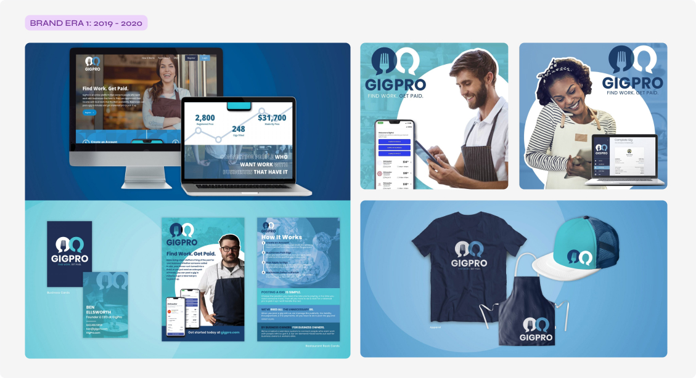
2019 rebrandSideGig → Gigpro: This direction established Gigpro’s first visual identity across product, marketing, and merchandise. Teams felt it did not fully reflect the company’s hospitality focus or mission.
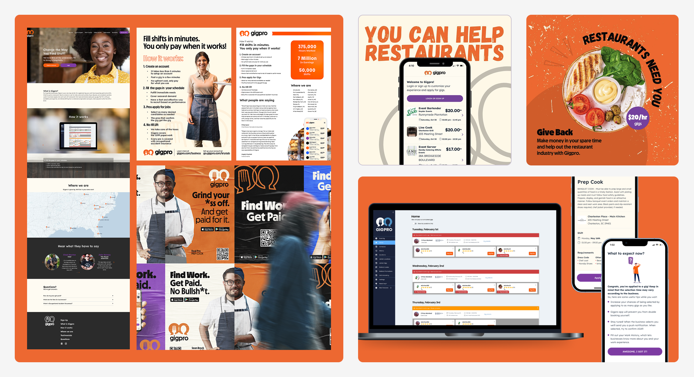
2021 rebrandGigpro rebrand: The next identity introduced a warmer, more expressive direction. However, without shared guidance, interpretation varied across product, marketing, and existing materials.
Creating a shared point of view
During stakeholder interviews, I asked people to describe how they wanted customers to think and feel when using Gigpro. I distilled those responses into four core themes that gave the organization a shared way to make brand decisions. Instead of getting stuck on individual design or technical details, teams could use the themes to evaluate whether a decision supported the experience or the feeling we wanted customers to have.
Four themes, distilled from 15 interviews across six teams, helped me understand how people across Gigpro saw the company, from the hospitality problem we were trying to solve to the beliefs and values behind our work.
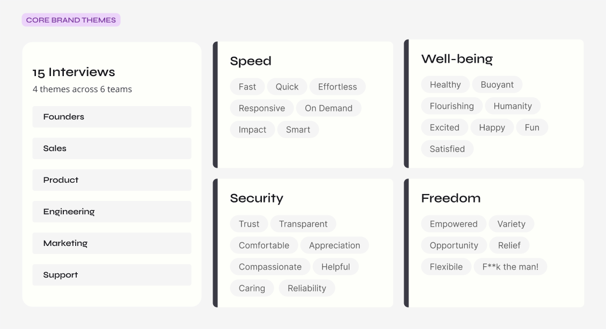
Design Direction
Improve the ingredients and adjust the recipes
The initial ask was to explore another rebrand. After reviewing the existing work and speaking with teams across the organization, I advised against starting over. Product was still using the 2019 identity while marketing had moved to the 2021 direction, so a third rebrand would have added more complexity without solving the immediate problem.
The company did not lack an identity; it lacked a shared way to use one. The 2021 direction better reflected Gigpro’s mission, but the guidelines lacked a clear owner to interpret, adapt, and maintain them as the business grew.
When I joined, product and marketing were working from different references, legacy styles were still in use, and design support was inconsistent. Instead of another rebrand, I focused on turning the existing direction into a practical system that teams could use across product and marketing.
Logo
Icon + wordmark → Wordmark only
The core logo was familiar and recognizable, so I advised against an immediate redesign. However, as Gigpro expanded into new products the following year, we eventually phased out the icon from the primary lockup and moved to a simpler wordmark that could work across a broader product ecosystem. In the meantime, I clarified the lockups we had and documented when and how each should be used in the new brand guide.
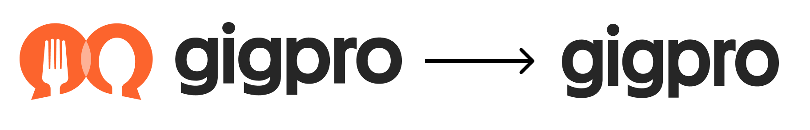
Color
30 colors to 23
I streamlined a fragmented 30-color palette into a focused system of 23, removing redundancies and defining clear color roles across product and marketing.
Purple became the predominant system color, supported by coordinated shades, tints, and balanced neutrals. I clarified how colors should work across interfaces, photography, illustration, and brand moments, replacing interchangeable choices with a cohesive framework.
Orange shifted from the default color for everything to a deliberate high-impact accent, used in the logo, key moments of emphasis, warm photo treatments, and the black, white, and orange illustration system.
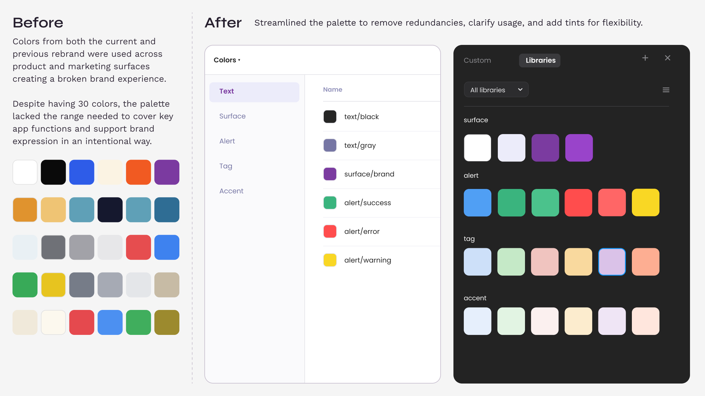
Streamlined the palette to remove redundancies, clarify usage, and add tints for flexibility.
Typography
16 weights to 4
The original brand guide included two fonts with 16 total weights. Without clear usage rules, contractor applications varied widely. After reviewing marketing collateral and identifying which weights were actually needed, I reduced the set to four core weights, added one handwritten style, and provided a type stack example with light documentation to guide consistent use.
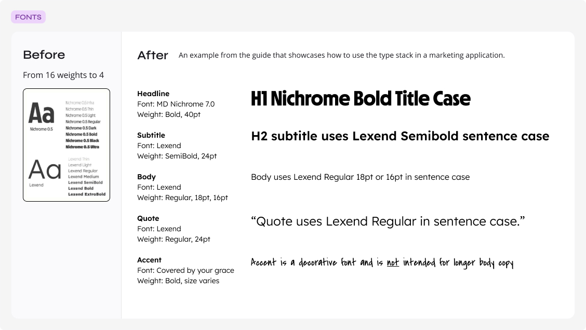
An example from the guide showing how the reduced type stack was meant to be used in a marketing application.
Photography
From ad-hoc photo selection to a stylized photo bank
Photos were the primary medium for visual expression across marketing surfaces, but the existing direction lacked a cohesive style. It felt generic: fragmented, overly staged, and disconnected from the warmth and diversity of the hospitality industry.
I responded by curating an image bank of nearly 500 royalty-free, photojournalistic-style photos that were more authentic to the industry. The photos were action-oriented, dynamic, and diverse. I created a custom Adobe Lightroom preset to standardize the look and feel, organized the library by segment, audience, and topic, and added guidance to support consistent image selection.
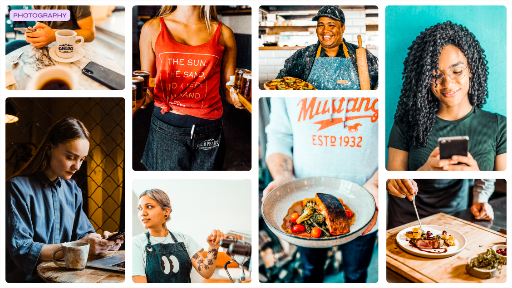
A curated bank of nearly 500 photos replaced ad-hoc, disconnected image selection.
Illustration
Sourcing a style for the worker experience
Illustration faced the same challenges as the brand's photography, feeling generic and lacking distinction. After exploring multiple directions with the founder to ensure the visuals reflected the true spirit of the brand, I selected a customizable open-source library that could flex across both product and marketing surfaces. I then established clear usage guidelines and example applications to ensure consistency across collateral. Illustration became the primary visual medium for worker-facing communications.
A customizable open-source illustration system replaced illustrations left over from the previous rebrand.
Brand to Product Strategy
Systematizing UI across platforms
I established one shared design system across Gigpro’s marketing website, business web app, and worker mobile app, then tailored its application to the needs of each platform. This created a recognizable experience across touchpoints while giving each surface the components, patterns, and flexibility it needed.
I partnered with engineering to translate the updated brand direction into customer-facing experiences across each product surface.
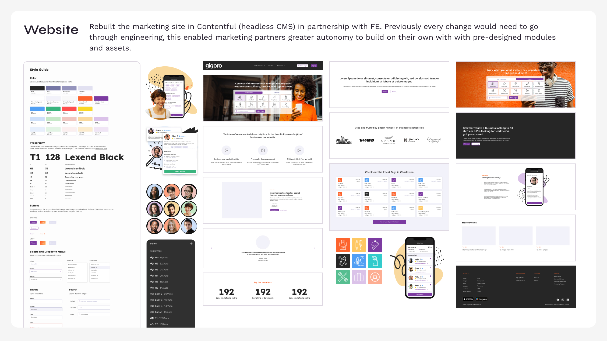
Rebuilt in Contentful, pre-designed modules gave marketing partners autonomy without engineering handoffs.
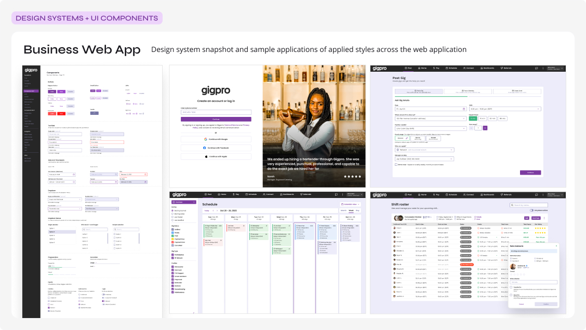
Design system snapshot and sample applications of applied styles across the web application.
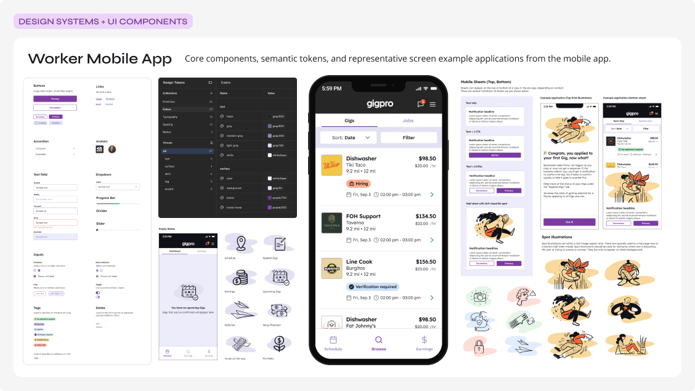
Core components, semantic tokens, and representative screen applications from the mobile app.
Operationalizing Design
Building the cookbook
After refining the core ingredients of the brand, I partnered with marketing managers and executive leaders to identify high-impact communication needs, including campaigns, sales collateral, internal presentations, and board decks.
I turned the foundations into templates and reusable tools tailored to Gigpro’s workflows. The toolkit supported consistent cross-channel execution and enabled contributors at different skill levels to create on-brand work independently.
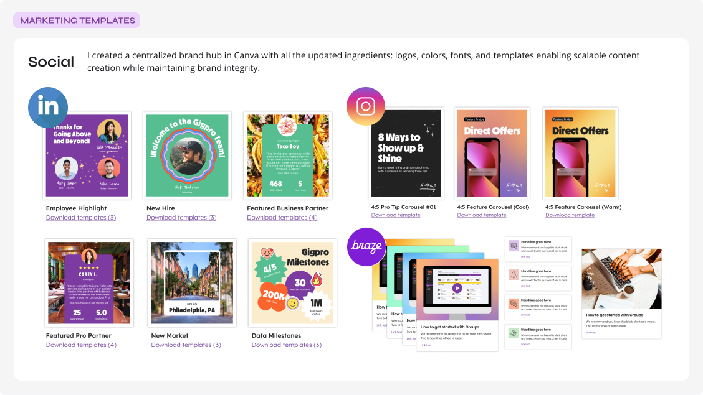
A centralized Canva brand hub let non-designers create scalable, on-brand social content.
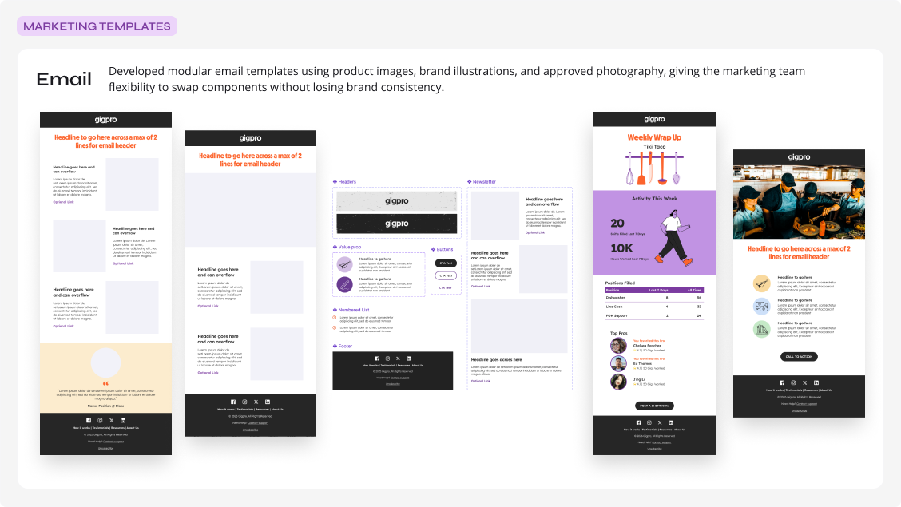
Modular email components let the marketing team swap pieces without losing brand consistency.
Outcomes & Transition
Designed for change, not just launch
The system I established gave Gigpro a clearer visual foundation and a more practical way to apply the brand across product and marketing. Its flexibility became especially important in early 2025, when Gigpro and Qwick joined forces and transitioned to the Qwick brand.
Rather than treating the change as a full redesign, we used reusable foundations to update high-priority touchpoints while product teams continued building features needed to reach parity with Qwick’s platform. This allowed the organization to make progress on the transition without halting feature delivery or fragmenting the experience.
A flexible design system gave the team a stable foundation for navigating a complex brand and product transition.
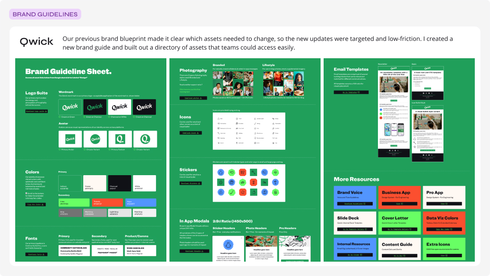
A new brand guide and asset directory made the updates targeted and low-friction.
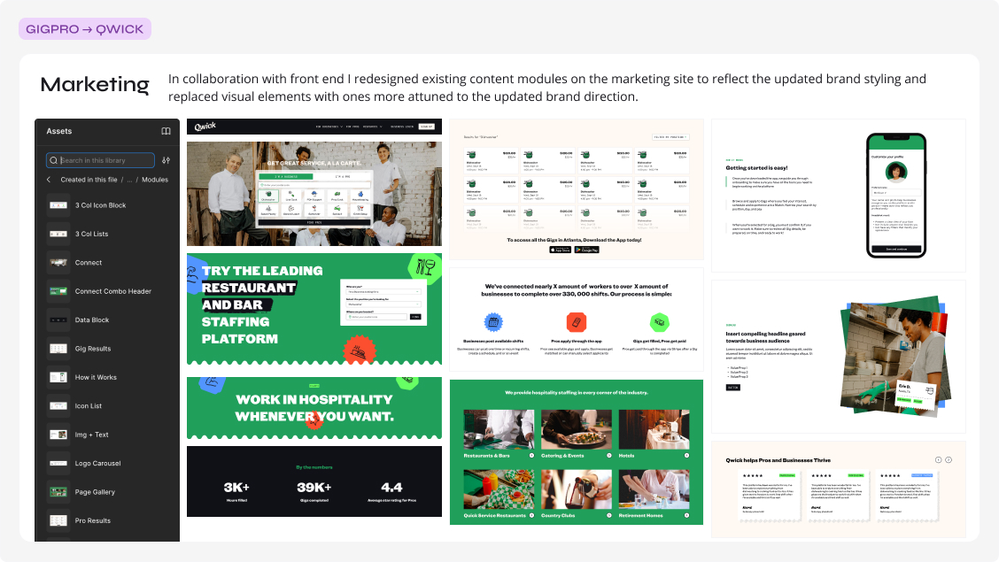
Existing content modules were redesigned in collaboration with front end to reflect the new brand direction.
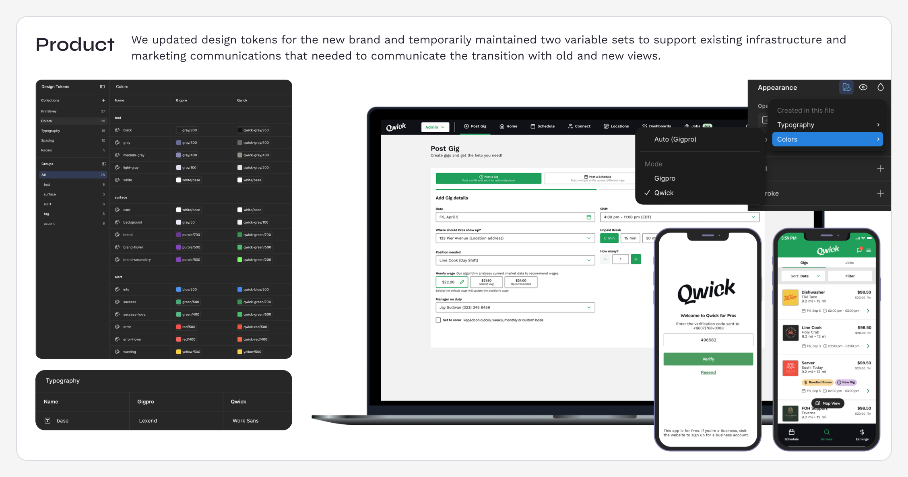
Two design-token sets were maintained temporarily to support the transition across old and new views.
Reflection
85+ features delivered, during a period of 278% revenue growth
The design foundation I built at Gigpro carried the company through three years of growth and two brand evolutions, including the move to the Qwick brand after Gigpro's acquisition of Qwick. Modular systems, operational brand guidelines, reusable tools, and shared practices across product and marketing gave teams the flexibility to respond to change while keeping the brand recognizable at every touchpoint.
- Shipped 85+ product features over three years
- Built the brand and design infrastructure behind the company's marketplace growth
- Led product and brand through two brand evolutions, including the move to the Qwick brand after the acquisition
Other Works